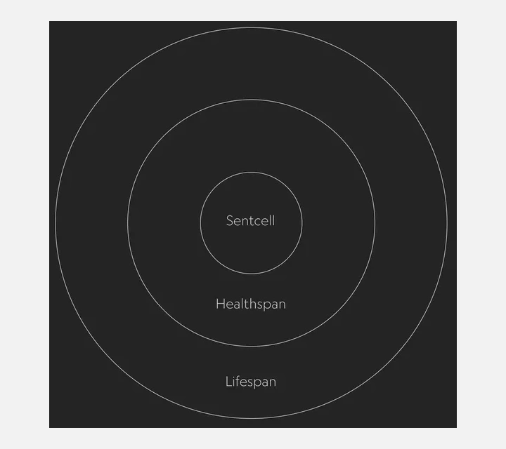

Orientarsi
Capire la storia del modello e scegliere come proseguire.
Andrea Barzaghi · UI/UX Design · 2026
Come raccontare una cultura attraverso le scarpe? Il mio archivio visivo della Nike Dunk SB parte dalla storia e dai modelli più rari per costruire un'esperienza di consultazione.

Concept
La cultura delle Nike Dunk SB incrocia skateboarding, street art, sneaker collecting e mercato secondario. Ho costruito un archivio che permette più livelli di accesso ai contenuti.
Una buona documentazione permette di capire dove andare dopo.
Il contributo del mio archivio
Ho costruito una chiave di lettura del progetto: distinguere la storia del modello, le caratteristiche tecniche SB-specifiche e i modelli più rari. La timeline e il confronto tra colorways rendono concreta questa distinzione.
Per chi valuta il progetto serve un quadro comprensibile; per chi cerca approfondimento culturale devono restare storie, collaborazioni e fonti.
Capire la storia del modello e scegliere come proseguire.
Esplorare le collaborazioni, i materiali e le varianti tecniche.
Accedere ai modelli più rari e ai riferimenti di valore.
FROM PROJECT TO CASE STUDY
Per documentare bene servono scelte di design: la gerarchia visiva, le componenti interattive e la pubblicazione del codice su GitHub Pages.


Sono partito dalla documentazione e dalle pagine GitHub: tipografia, colori, spazi e comportamenti formano un insieme di decisioni. Ho usato Primer Brand come vocabolario per costruire la mia pagina.
Ho selezionato gli elaborati e dato a ogni contenuto una forma: Pillar per i livelli di lettura, Tabs per le viste, Testimonial per una riflessione. Gerarchie e spazi collegano i capitoli.
Il lavoro continua nel browser: controllo la leggibilità, i collegamenti e i controlli da tastiera a larghezze diverse. La prova pratica richiede di saper spiegare e modificare il codice.
Esplora l'archivio completo del Dunk SB, dalle prime colorazioni universitarie ai modelli più rari e preziosi della storia dello skateboarding.
Vai all'archivio